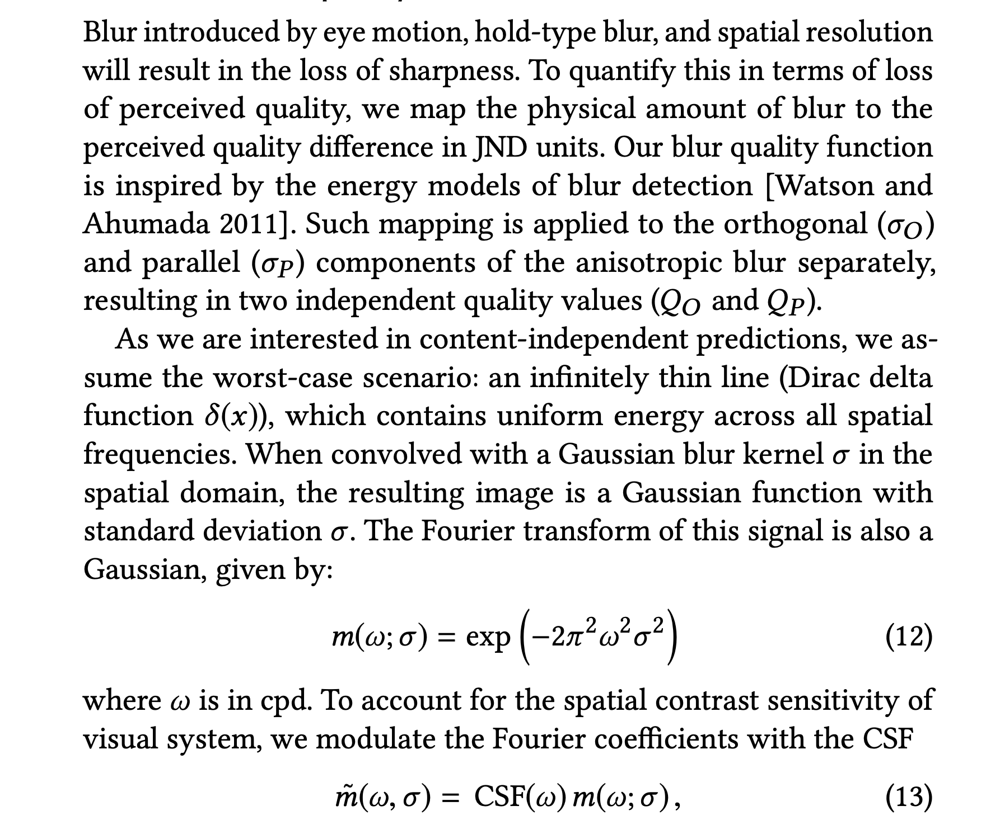
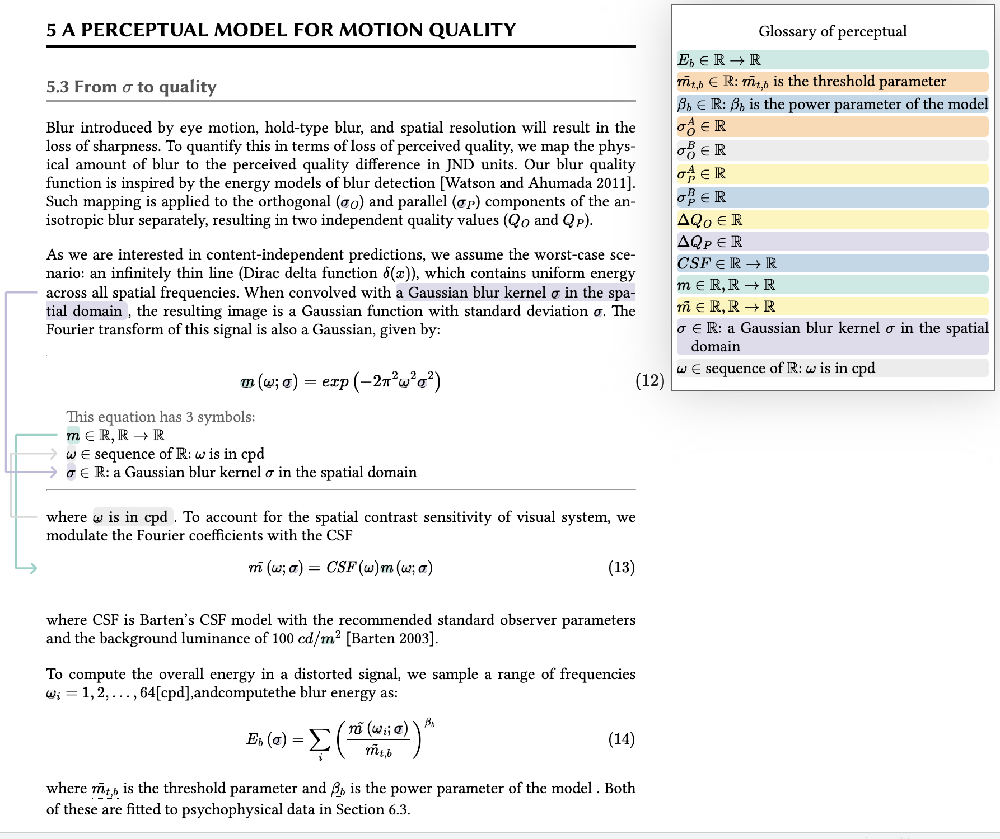

A perceptual model of motion quality for rendering with adaptive refresh-rate and resolution
We implemented
section 5.3
in the paper
Check the
Markdown source file
and the
Output code
Paper
H❤️rtDown Viewer Demo

